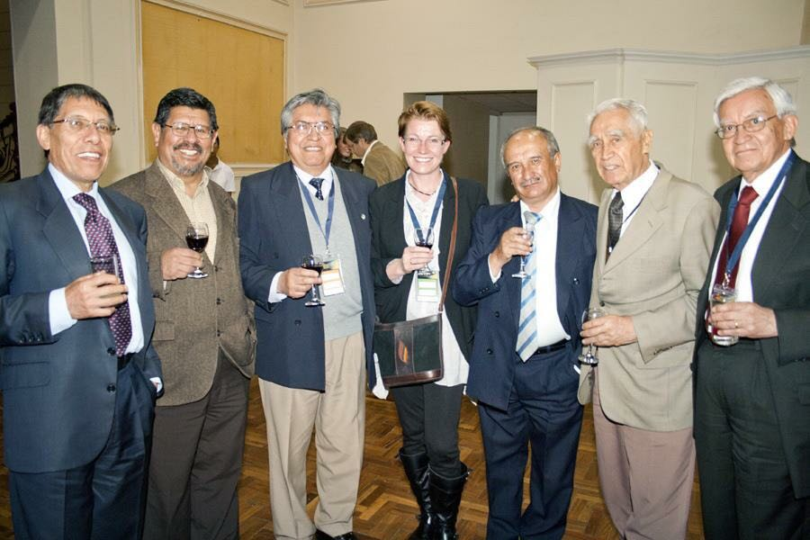

Noticias
La búsqueda de vida fuera de la tierra en la primera Charla de Primavera en la Academia 2017
La astronomía es el tema del ciclo de charlas “Primavera en la Academia” 2017 , la que partió este miércoles
Leer mas...
Actividades
Actividad 1
Actividad 2
Actividad n